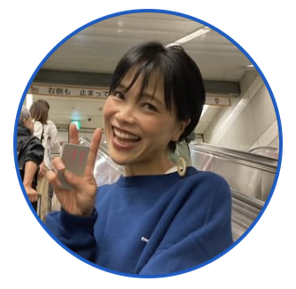
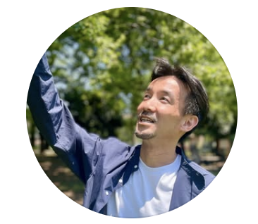

レムケなつこ
THE THREAD 主宰
THE THREAD主宰・THREAD AIコーチ開発。オーガニック×自己実現をテーマに、Instagram・note・Voicyで発信。
「変わる」ではなく「戻る」を合言葉に、自分と喧嘩せずに生きる道を探している。
動けないのは、弱いからじゃない。
自分と、少しズレているだけ。
発信のノウハウも、
マインドセットの矯正も、
ここにはありません。
あるのは、2日間かけて「自分の中にある2つの声」と
もう一度ちゃんと出会い直す、静かな対話の時間だけ。
戻る ・ 緩む ・ 一致する
「変わる」「頑張る」じゃなくていい。
自分の内側に戻って、ゆるんで、2つの声が同じ方向を向きはじめたとき、
人は"自然に"動き出す。
THE THREADは、そのための場所です。
── THE THREADに参加してくれた方との対談
色がぼやけていた地点から、もう一度色がつき始めるスタート地点へ。
ゴール設定も、行動宣言もしません。動こうとするほど固まってしまう人のために、"戻る"ことから始める設計になっています。
アクセル(やる気)だけを焚きつけるのではなく、ブレーキ(防衛反応)側の声に耳を澄ます時間。コーチはったーによる、急がせない対話設計です。
悩み→理想→現状→ズレ→本音→未来。ばらばらに考えず、一本の物語として体験するから、気づきが"線"になって残ります。
あなたの敵は、
"意志の弱さ"でも"行動力のなさ"でもありません。
本当の敵は、
「変わらなきゃ」という、
その圧そのものです。
外側の声で動こうとするほど、
内側の声が聞こえなくなっていく。
1日120分。ワークとブレイクアウトでの対話が中心です。
悩み → 理想 → 現状。
その3つを並べて可視化した瞬間、「前に進めない本当の理由」が、やさしい形で見えてきます。努力不足ではなかった、という認識の転換が起きる1日。
人は「外側の声」で動こうとするほど、「内側の声」が聞こえなくなる。
このしくみをやさしく紐解きながら、本来の自分で生きる未来を、もう一度からだで感じ直す1日です。
4/24(金)からの1週間以内にお申込みいただいた先着10名様に、THREAD AIコーチの利用権をプレゼントします。
ご利用期間:5月24日(日)まで。

THE THREAD主宰・THREAD AIコーチ開発。オーガニック×自己実現をテーマに、Instagram・note・Voicyで発信。
「変わる」ではなく「戻る」を合言葉に、自分と喧嘩せずに生きる道を探している。

THE THREADコーチ。ブレーキと優しく手をつなぐ対話が得意。
急がせない・評価しない・結論を押しつけない、やわらかな場づくりの担い手。
5/7(木) 20:00 ─ オンライン無料イベント「スナックなつこ」。
THE THREADの世界観を、60分だけ先に体験できます。
急がなくていい。
でも、もし"もう十分ひとりで抱えてきたな"と感じているなら、
ここに戻ってきてください。